I originally created this simple and incredibly useful C# WPF application to easily compare data in .csv files, however over
time I’ve added on two more buttons. One is for removing duplicate lines in a single file and the other
is for dividing a file up into ten files.
I use Linq throughout the app and have divided it up into smaller simple methods for convenience sake.
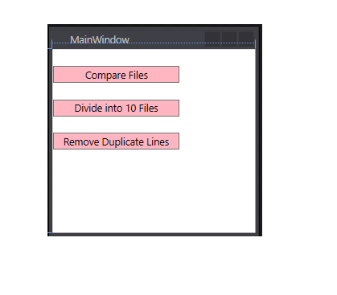
PocketUnicorn.ca is a web adoption center where you can adopt your very own pocket unicorn. This web store ships pocket unicorns to eager owners. In order to keep each unicorn happy, fed, and healthy, we also sell a variety of items; such as oats, a miniature barn, glittered water, sparkles, and a horn sharpener. The adoption agency owner would like us to develop a system to keep track of these amazing creatures and their supplies as they find their way to their new homes.
Our system:
❤ Allows potential customers to register
❤ Allows registered customers to share information about the health and growth of their pocket unicorn
❤ Allows registered users to purchase more elements essential to pocket unicorns, such as sparkles, oats, and glittered water.
❤ Allows customers to adopt pocket unicorns
❤ Allows customers to enter shipping and credit information
❤ Updates the inventory accordingly
❤ Allows customers to view all unicorns available for adoption
❤ Only administrators may update inventory, add unicorns, add items, or delete users
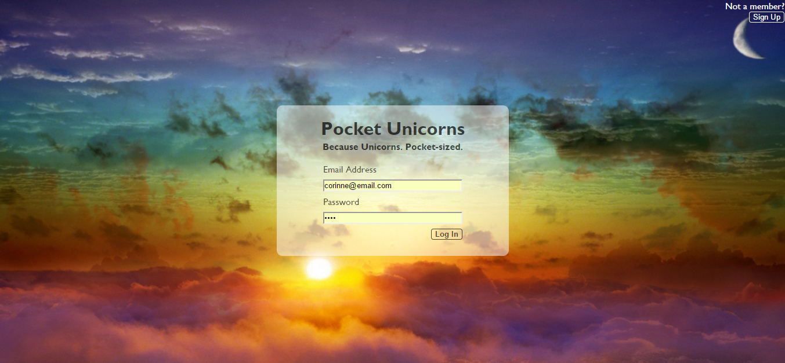
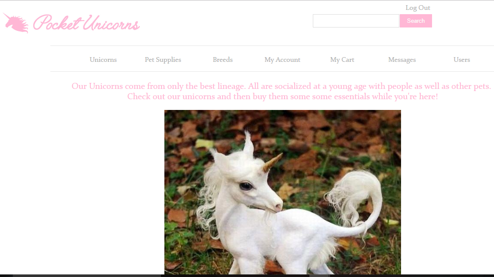
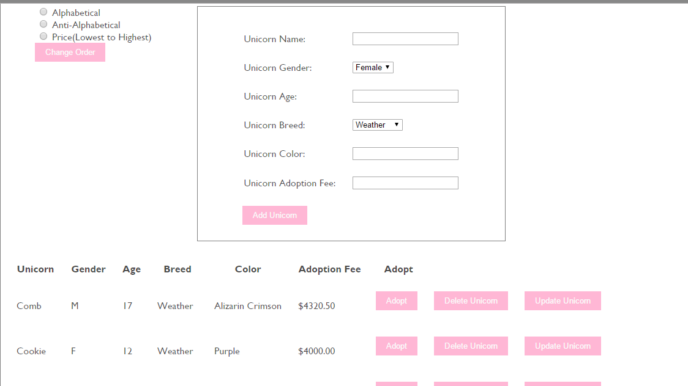
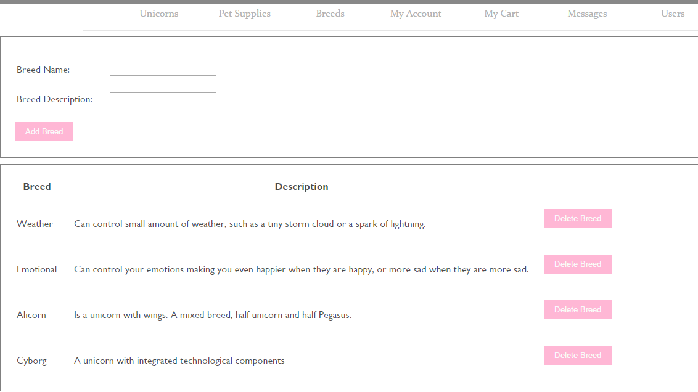
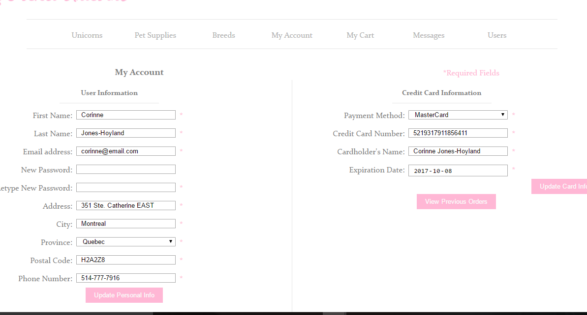
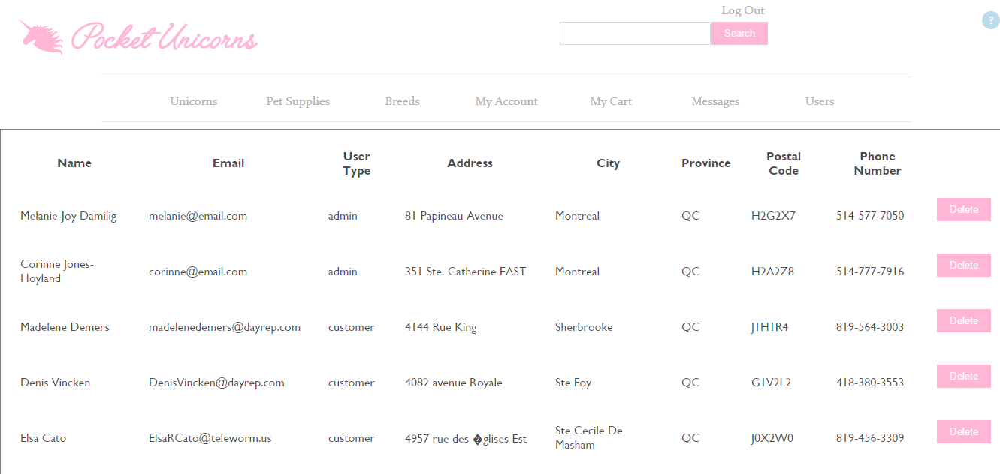
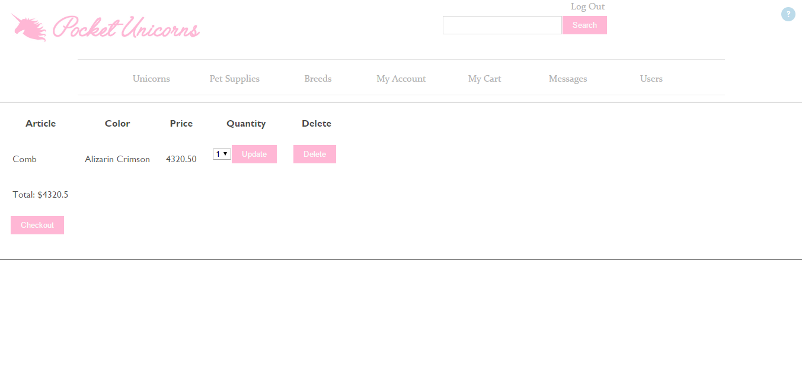
BOB (Bank of Bankland) is a simple banking application written in Android that allows a user to log on and withdraw
or deposit into their account and then see the balance and past transactions. The User can also change their password, which is
encrypted and must contain 8 characters with symbols and capital letters.
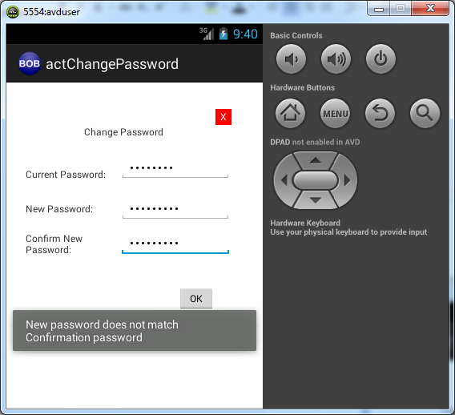
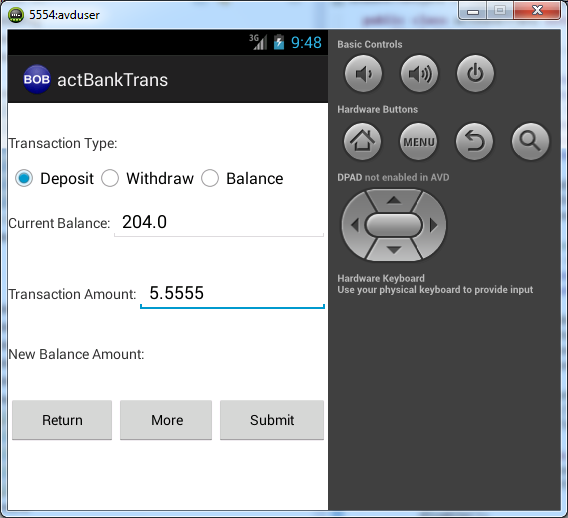
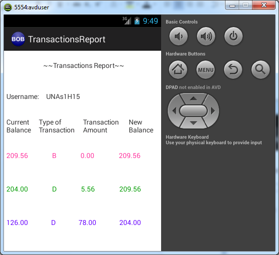
This site was made with a slight minimilistic look, incorporated slim back to the top arrows, slideshows, more information arrows, and much more.
While it is mobile friendly, it also uses responsive upscaling.
Although the About page needs more love as the upscaling isnt very pretty.
This addresses a little known issue; over a third
of users are accessing major sites with screens that are wider than 1350 pixels and yet in August of 2015 only
18% of the fifty leading US websites support these larger screens.
Read more here.
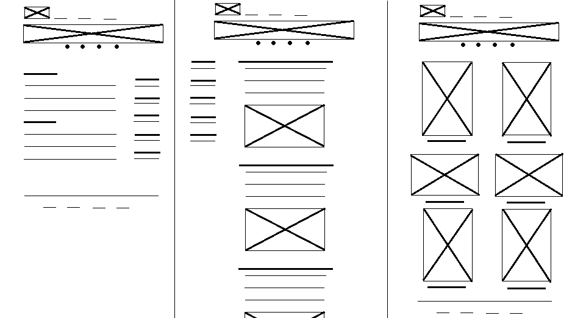
Created my CS logo. Finally using my eight years of art lessons for something. It is also an alien-fish for some reason.
Disclaimer: only descriptions and interface screenshots are avaliable.
This C# WPF multi-threaded application takes a large list of USDPs and runs ten threads each taking a tenth of the USDPs and using them for various SQL calls to select
information needed and creating a csv file for 15 minute meters and 30 minute meters with the USDP in the first column, the number of seconds
from now until Jan 31 2009 in GST time, the amount of consumption for specified dates, and the affiliated VEE code. There are a ton of clauses
to extract the exact amounts we are interested excluding things like VEE codes greater than 40 and such. Running on one thread this application
takes a few hours to run, with ten threads it takes an average of 30 minutes.
There is no display for this application as it is run by task scheduler once a day.
This C# WPF application starts up with parameters given to it by the automation program that runs it. It uses
these parameters to identify which LDC, server, database, archive folder, email address and more it should be using. It then grabs
any files that are sent to us from the specified LDC and imports them into the SQL database.
This application was originally in Visual Basic 6.0. I converted it to C# WPF along with updating the process, removing old parts
no longer used, and adding new features. This application imports regular .csv files and xml files. For xml files I used XElement to
find specific nodes and extract their data. Any duplicate files are moved into a folder for duplicates, that is created if not in existence,
and the date is appended to the file name. These duplicate files are not reimported into the database and are not used for updating the database tables.
Specific information is looked up in other tables with data extracted from these files, such as addresses. For example when a premise ID
is extracted it will be used to find the address in the database
Any errors that occur, such as an empty file or missing information, are all now emailed at once to the team of developers after all the
files in the directory have been imported and moved into their archive folders. Thus cutting back on the hundreds of popups the VB6 version had.
There is no interface as it is run from our automation application every few hours. When there are no files left in the directory to be processed the application closes itself.
I created two pages for SCADA information in VB.NET. The first page Events allows the user to filter,
find, and display event data from the database. It creates a SQL select statement dynamically based on what the user enters
into the filter fields. Filtering by desc, user if, station id, point id and by date ranges. The found data is then displayed
in the large white area to the right in a datagrid that can have its columns sorted, reordered, and such as well.
The second page, features a similar data range filter, followed by a filter for the Point Name. Once the user types
in the filter textbox and highlights some of the Data Point options that appear inside the grey area they can select “Get UoM Options”
which will populate the second grey area with UoM options that apply only to the Data Points selected. They can then select the UoM they
wish to see and the data grid to the right will be populated with the instrumentation data from the database. The user has the option to
change the amount of decimal spaces the data displayed has as well.
There is also an option to switch to a chart view where the data is then displayed in a line graph, each datapoint is a
different colored line which is explained in the legend. You are only allowed to use this option if you have three or less Data Points
selected and it will prompt you if you have more selected. This was decided because when too many Data points are selected the data become
harder to read and loading times take too long. You can then of course switch back and forth from data grid to chart views.
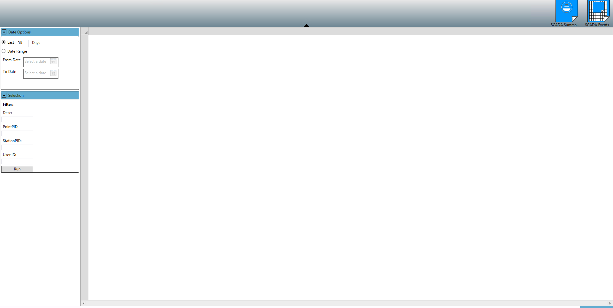
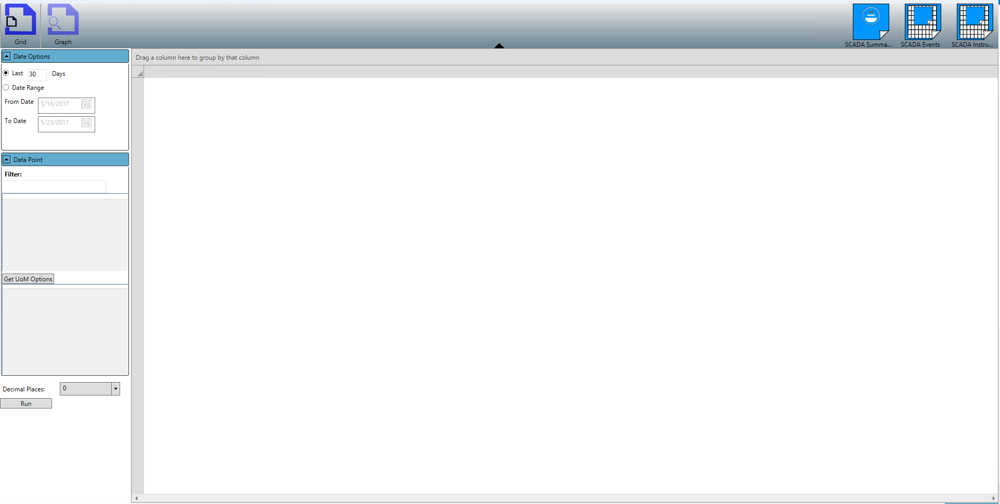
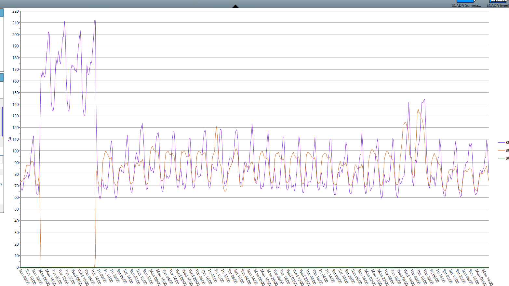
This large SharePoint project was created for the project managers for the CAPA site to create a QMS Draft Document Library.
After many meetings and research, I recreated their workflow and have made them a semi-automatic system for their documents
by incorporating Microsoft 365 with a SharePoint Library, which blew away the project manager. They upload a file to a OneDrive
account and then get the link from that document. Then they go into SharePoint and add a new item to the draft library. In the entry
they paste the link to the document.
After they have done this, I have developed several workflows that are triggered based on data
they enter and how many days go by. These workflows send emails when a document is ready to be reviewed, day three of the review, day
five of the review as a last day warning, and then on day six it emails the process owner with a go ahead. The process owner then needs
to approve the document, after which an email to the QMSR is triggered. Then the QMSR needs to approve the document, which then triggers
an email to be sent to the entire company to inform everyone that the document has been released.
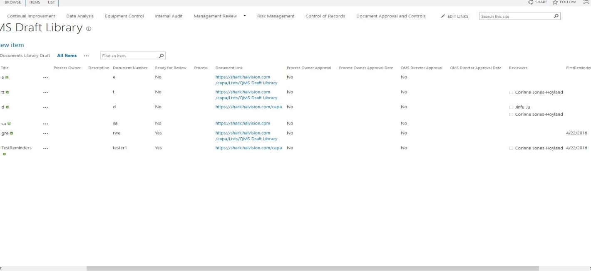
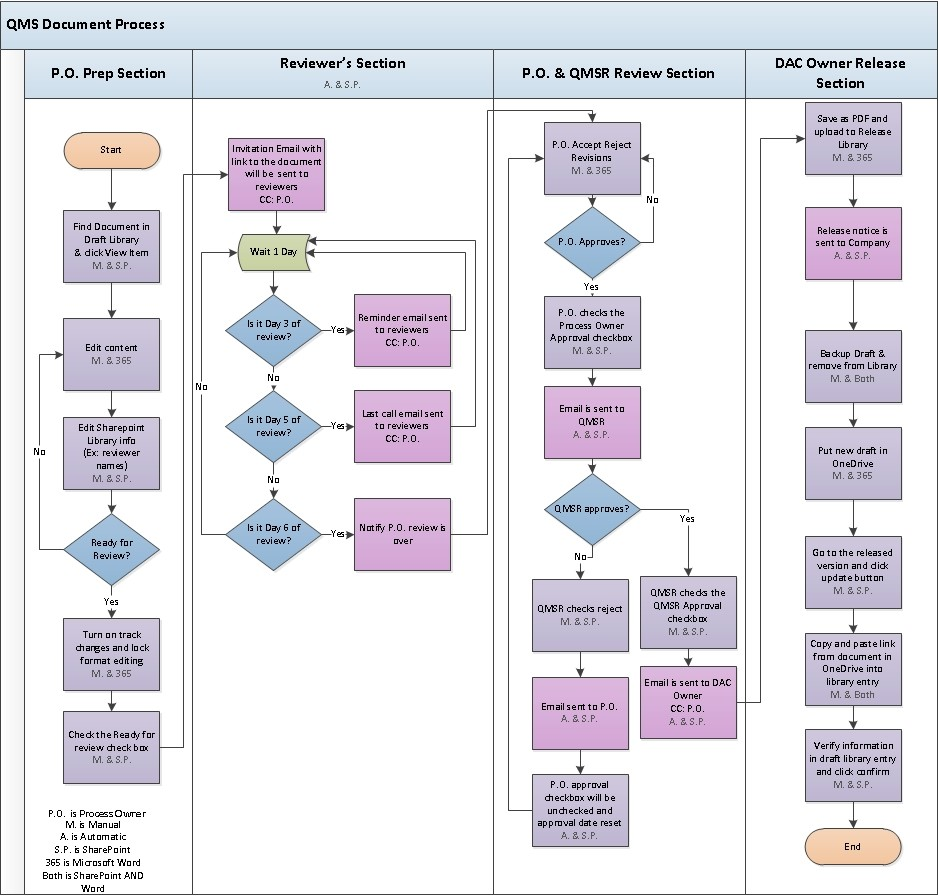
I created a web application for the development team so they can record licenses for our products. Currently they
are manually entering everything into SQL and then into Putty. My web application is to do all of that for them using ASP.NET MVC.
My web application interface displays a slot to enter a serial number or a MAC number and then search. Once the user searches for a
number that exists in the database, four checkboxes for the licenses appear. My application uses entity framework to read from a view that
I created which reads from the SQL database and fills in four check boxes to indicate if a product has those licenses. This view only contains
products with a model name that starts with "MAK" from the model table and a stage_type that contains "License" from the uut table.
There is also an update button which can be pressed after an admin member checks or unchecks the check boxes. However, depending on the
model type certain actions take place. For example, if the product is an encoder then if the user checks the AVOUT2 license then CoT license
is automatically checked as well, since both licenses are required together for encoders.
Clicking update as admin with correct information causes a script to be run through SSH which creates a license file with the serial number
as the title and .lic as the extension. After which it uses entity framework to update the SQL database with the new stage_type value which is
built using new and old information about the licenses the product has.
Once this has been done, update button will redirect user to a new view which contains all of the license file information including the
file's name, the serial number of the product, the MAC, the model type, and the version. On this page a user may enter a correct email address
and send this file in an email titled "License".
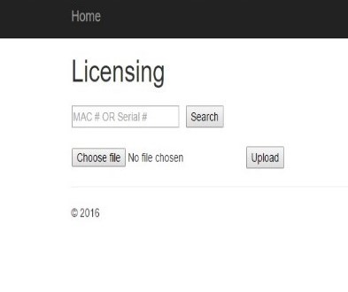
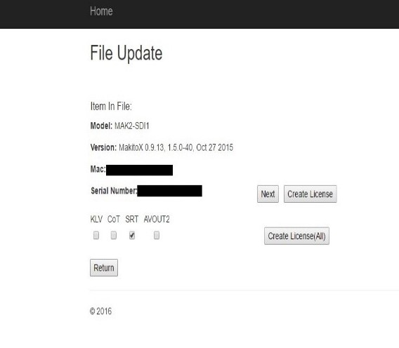
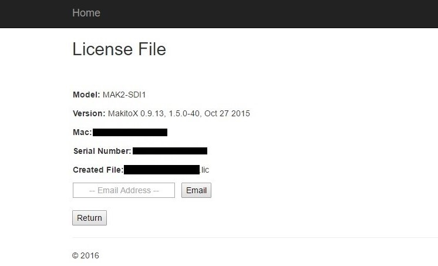
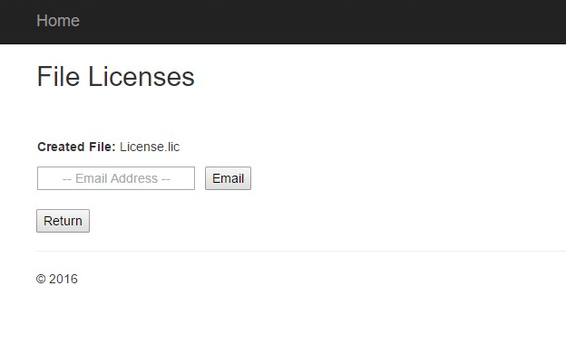